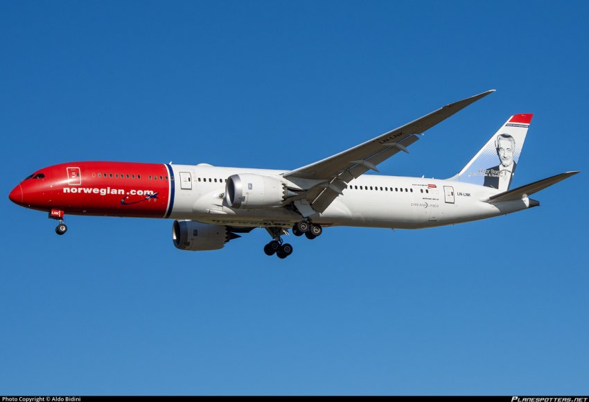
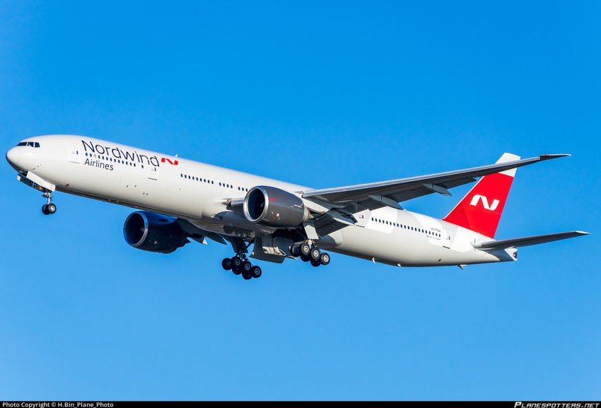
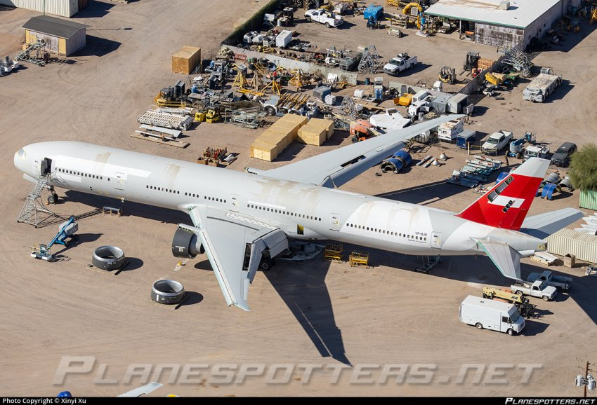

유럽의 프리미엄 차터 항공사 Privilege Style
321부터 332 772 등 알짜 기단으로 세계 각지의 단체 고객들을 수송하는 항공사이다
이 단정하고 깔끔한 모던 럭셔리 도색을 입은 이 기체는...
사실 법사네로 출고되어 말년을 에어서울로 보낸 8266 기체이다
제목을 저렇게 뽑은 데엔 나름 이유가 있는 셈 ㅋㅋ
아시아에서 lcc 기체로 활동하며 아주 구수하고 정겨운 동네를 다니던 친구가
유럽에선 휴양지만 쏘는 모습을 보니 가히 결혼 잘한 전여친이 떠오르지 않을 수가 없다.(상상)

이런 출신이 독특한? 기체들을 한번 역추적 해보니 한국에도 꽤 재밌는 기체들이 많이 들어와있는데

네바다에서 골골대던 노르웨이 코쟁이들을 월버지가 먼저 안은 다음에
하이브리드 캐리어에 뿌린 건 너무나도 유명한 이야기
얘네 말고도
갓 태어났으나 집이 위기에 빠져 몇 년 간 미국에 갇혀있던 우크라이나 출신 난민을
한 동아시아의 중고기 컬렉터가 들인 것도 확인할 수 있다
최근엔 러시아 출신 난민.도 들였는데 이쯤 되면 난민 보호 단체
외힙의 대부 드버지 특도를 했던 미국 처녀 역시 잠시 앵커리지 여인이 됐다 한국에 들어왔(다가 나갔)는데
바로 청주 청년의 첫 퇴역 기체 되시겠다
지금은 중동에서 차터기로 유럽 발사하시는 중

앞서 본 8266 기체처럼 한국 태생 외국 기체 중 어쩌면 많은 집중을 받은 이 러시아 청년
코시국에 반출된거라 여러곳에서 관심이 많았는데

유감스럽게도 새 집으로 향하던 중 일이 (많이) 틀어져서 안그래도 많았던 나이에 결국 세상을 뜨셨다.
이 글을 쓴 의의는 별거 없고... (뭔가 옆동네 아조씨 한분이 쓰는 기체썰 글 같이 됐는데)
대충 스카에서 구르다 항스버거질 하던 중 발견한 전여친(8266)에 써본 여러 비행기들의 흥미로운 국적 변환 썰 글이 되겠다.
댓글
수집 당시 댓글 23개
ㅇㅇ · 11.14 00:48:04
· 소노사우루스 · 11.14 00:50:37
피치못한피치항공 · 11.14 02:46:53
· 소노사우루스 · 11.14 07:18:57
ㅇㅅㅇ · 11.14 07:49:23
· 소노사우루스 · 11.14 07:58:45
AQUA · 11.16 08:43:22
ㅇㅇ · 11.16 08:49:19
봇치쟝 · 11.16 08:52:31
· ㅇㅇ · 11.16 09:51:45
· 봇치쟝 · 11.16 09:53:04
ㅇㅇ · 11.16 08:56:18
ㅇㅇ · 11.16 09:09:05
· ㅇㅇ · 11.16 09:13:28
pyuru · 11.16 09:12:14
ㅇㅇ · 11.16 09:22:16
nnnn · 11.16 09:33:41
ㅇㅇ · 11.16 09:52:02
ㅇㅇ · 11.16 10:04:44
ㅇㅇ · 11.16 10:06:01
ㅇㅇ · 11.16 10:07:05
원또 · 11.16 15:46:02
ㅇㅇ · 11.16 16:11:17